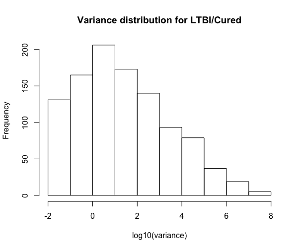
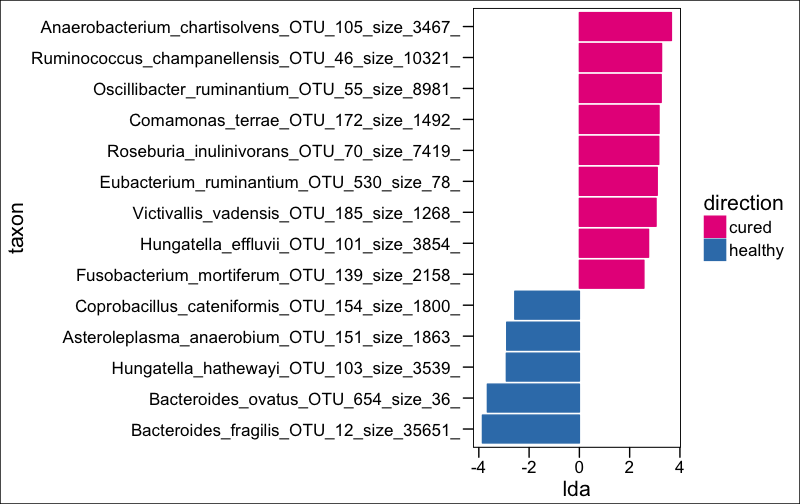
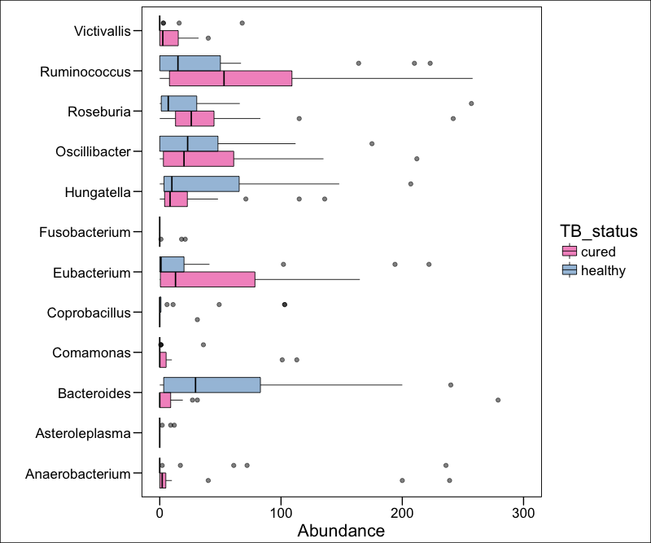

HRZE causes dysbiosis
This tutorial is a walkthrough of the data analysis from:
Antibiotic treatment for Tuberculosis induces a profound dysbiosis of the microbiome that persists long after therapy is completed
Scientific Reports 7, Article number: 10767 (2017)
doi: 10.1038/s41598-017-10346-6
It shows how to take microbiome data and reproduce the figures from this paper.
Jump right to subsetting...
See the previous section (Treatment) for how to generate the Phyloseq object
#IGRA positive vs cured (IGRA+ vs cured)
phy_pos_cured <- subset_samples(phy,!is.na(IGRA) & IGRA!="negative")
phy_pos_cured <- subset_samples(phy_pos_cured,!is.na(IGRA) & IGRA!="")
phy_pos_cured <- subset_samples(phy_pos_cured,!is.na(TB_status) & TB_status!="treatment")
phy_pos_cured <- subset_samples(phy_pos_cured,!is.na(Group6_TB_category) & Group6_TB_category!="family_contact")
phy_pos_cured <- subset_samples(phy_pos_cured,!is.na(Group6_TB_category) & Group6_TB_category!="treatment")
phy_pos_cured <- subset_samples(phy_pos_cured, age < 30)
#Variance of OTU abundances
hist(log10(apply(otu_table(phy_pos_cured), 1, var)), xlab = "log10(variance)", main = "Variance distribution for LTBI/Cured")

DESeq normalization
library("DESeq2")
phy_DESeq <- phy_pos_cured
t <- get.tax(phy_DESeq) %>% mutate(PhySpec=paste(Species,otu))
taxa_names(phy_DESeq) <- t$PhySpec
taxa_names(phy_DESeq) <- gsub(" ","_",taxa_names(phy_DESeq))
taxa_names(phy_DESeq) <- gsub("=","_",taxa_names(phy_DESeq))
taxa_names(phy_DESeq) <- gsub(";","_",taxa_names(phy_DESeq))
dig <- phyloseq_to_deseq2(phy_DESeq, ~ TB_status) #replace this with any sample variable(s)
#calculate geometric mean
gm_mean <- function(x, na.rm=TRUE){
exp(sum(log(x[x > 0]), na.rm=na.rm) / length(x))
}
geoMeans <- apply(counts(dig), 1, gm_mean)
dig <- estimateSizeFactors(dig, geoMeans = geoMeans)
dig <- estimateDispersions(dig)
dig <- DESeq(dig,fitType= "local")
# diagvst <- getVarianceStabilizedData(dig)
# dim(diagvst)
# otu_table(phyIGRA_pos_treatment) <- otu_table(diagvst, taxa_are_rows = TRUE)
res <- results(dig)
#res$pfdr <- p.adjust(res$pvalue,method="fdr")
res <- res[order(res$padj, na.last=NA), ]
alpha <- 0.05
sigtab <- res[(res$padj < alpha), ]
sigtab <- cbind(as(sigtab, "data.frame"), as(tax_table(phy_DESeq)[rownames(sigtab), ], "matrix"))
head(sigtab) #view the data
posigtab <- sigtab[sigtab[, "log2FoldChange"] > 1, ]
posigtab <- posigtab[, c("baseMean", "log2FoldChange", "lfcSE", "padj", "Phylum", "Class", "Family", "Genus")]
DESeq normalization plots
library("ggplot2")
theme_set(theme_bw())
sigtabgen <- subset(sigtab, !is.na(Genus))
sigtabgen <- subset(sigtab, !is.na(Phylum))
# Phylum order
x <- tapply(sigtabgen$log2FoldChange, sigtabgen$Phylum, function(x) max(x))
x <- sort(x, TRUE)
sigtabgen$Phylum = factor(as.character(sigtabgen$Phylum), levels=names(x))
# Genus order
x <- tapply(sigtabgen$log2FoldChange, sigtabgen$Genus, function(x) max(x))
x <- sort(x, TRUE)
sigtabgen$Genus <- factor(as.character(sigtabgen$Genus), levels=names(x))
phylumcolors <- c("hotpink","brown","lightblue","purple")
ggplot(sigtabgen, aes(x = Genus, y = log2FoldChange, color = Phylum)) + geom_point(size = 6) +
theme(axis.text.x = element_text(angle = -45, hjust = 0, vjust = 1)) +
theme(axis.text=element_text(size=12,face="bold"),legend.text=element_text(size=12))
Run LEfSE for LTBI vs Cured
phy.lefse <- phy_DESeq
results_folder <- "~/Desktop/uparse_july/"
class <- "TB_status"
subclass<-FALSE
subject<-"sample"
anova.alpha<-0.05 #this is the important p value
wilcoxon.alpha<-0.05
lda.cutoff<-2.5
wilcoxon.within.subclass <- TRUE
one.against.one <- T
mult.test.correction <- 0
make.lefse.plots <- FALSE
by_otus <- FALSE
#
sample.data <- phyloseq::sample_data(phy.lefse) %>% data.frame(stringsAsFactors = FALSE)
sample.data$sample <- rownames(sample.data)
#
keepvars <- c("sample","TB_status")
keepvars <- unique(keepvars[!is.na(keepvars)])
lefse.samp <- sample.data[, keepvars]
#
sample0 <- t(lefse.samp) %>% as.matrix()
colnames(sample0) <- sample0[1,]
sample0 <- as.data.frame(sample0)
#
data0 <- otu_table(phy.lefse) %>% as.data.frame()
data1 <- data0 %>% as.data.table(keep.rownames=T)
sample1 <- sample0 %>% as.data.table(keep.rownames=T)
common <- intersect(colnames(data1), colnames(sample1))
pre.lefse <- rbind(sample1, data1,fill=T) %>% t() %>% na.omit() %>% t()
#writes table for LEfSe
write.table(pre.lefse,file =paste(results_folder,"lefse.txt",sep=""),sep = "\t",row.names = FALSE,col.names = FALSE,quote = FALSE)
opt.class <- paste("-c", which(keepvars %in% class))
opt.subclass <- ifelse(is.na(subclass), "", paste("-s", which(keepvars %in%
subclass)))
opt.subject <- ifelse(is.na(subject), "", paste("-u", which(keepvars %in%
subject)))
format.command <- paste(paste("format_input.py ",results_folder,"lefse.txt ",results_folder,"lefse.in",sep=""),
opt.class, opt.subject, "-o 1000000")
format.command
#"format_input.py ~/Desktop/uparse_july/lefse.txt ~/Desktop/uparse_july/lefse.in -c 2 -u 1 -o 1000000"
system(format.command)
lefse.command <- paste(paste("~/miniconda2/bin/python ~/lefse/run_lefse.py ",results_folder,"lefse.in " ,results_folder, "lefse.res",sep=""),
"-a", anova.alpha, "-w", wilcoxon.alpha, "-l", lda.cutoff,
"-e", as.numeric(wilcoxon.within.subclass), "-y", as.numeric(one.against.one),
"-s", mult.test.correction)
lefse.command
#"~/miniconda2/bin/python ~/lefse/run_lefse.py ~/Desktop/uparse_july/lefse.in ~/Desktop/uparse_july/lefse.res -a 0.05 -w 0.05 -l 3 -e 1 -y 1 -s 0"
system(lefse.command) #this will print out the number of significant OTUs (make sure it's not 0)
lefse.out <- read.table(paste(results_folder,"lefse.res",sep=""), header = FALSE, sep = "\t")
names(lefse.out)<-c("taxon","log.max.pct","direction","lda","p.value")
(lefse.out<-na.omit(lefse.out))
Palette_LTBI_cured <- c("#e7298a","#377eb8")
if(length(unique(lefse.out$direction))<3){
lefse.out$lda[lefse.out$direction==unique(lefse.out$direction)[1]] <-
-1*lefse.out$lda[lefse.out$direction==unique(lefse.out$direction)[1]]
}
lefse.out$taxon<-factor(lefse.out$taxon,levels=lefse.out$taxon[order(lefse.out$lda)])
g1<-ggplot(data=lefse.out,aes(x=taxon,y=lda,color=direction,fill=direction))+
geom_bar(stat="identity")+
coord_flip()+
theme_base()
if(length(unique(lefse.out$direction))<3){
g1<-g1+scale_color_manual(values=c(Palette_LTBI_cured))+
scale_fill_manual(values=c(Palette_LTBI_cured))
}
print(g1)

ltk<-as.character(lefse.out$taxon)
phy_ra_ltk<-prune_taxa(ltk,phy.lefse)
phy_ra_ltk_m<-psmelt(phy_ra_ltk)
phy_ra_ltk_m$OTU<-factor(phy_ra_ltk_m$OTU, levels=lefse.out$taxon[order(lefse.out$lda)])
g2<-ggplot(phy_ra_ltk_m,aes(x=Genus,
y=Abundance,color=TB_status,
fill=TB_status))+
geom_boxplot(position=position_dodge(),
colour="black", # Use black outlines,
size=.3,alpha=0.5) + # Thinner lines
theme_base()+ xlab("")+ coord_flip() +
scale_y_continuous(limits = c(0,300))
if(length(unique(lefse.out$direction))<3){
g2<-g2+scale_color_manual(values=c(Palette_LTBI_cured))+
scale_fill_manual(values=c(Palette_LTBI_cured))
}
print(g2)
